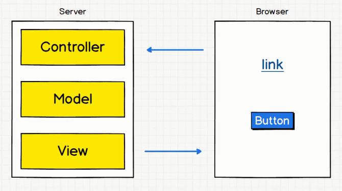
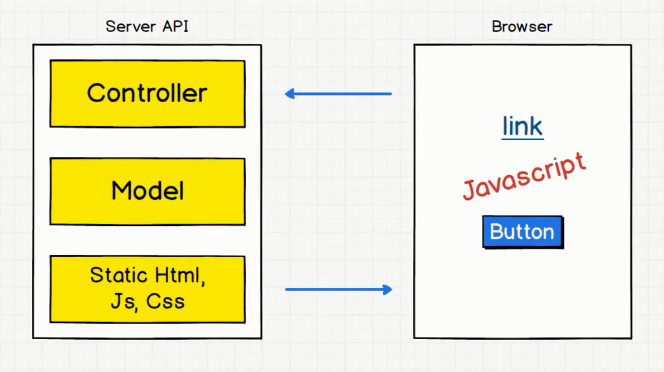
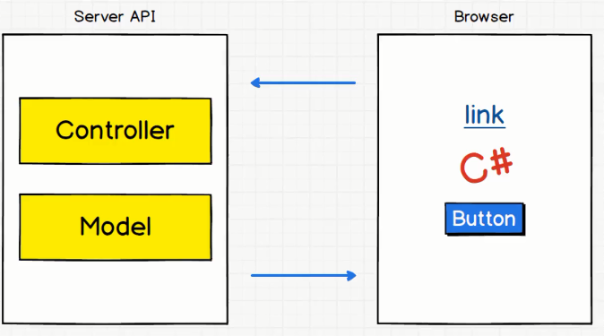
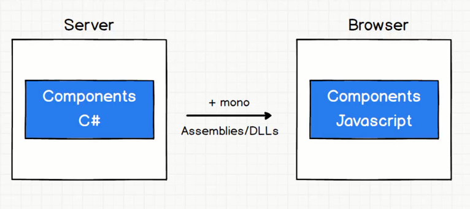
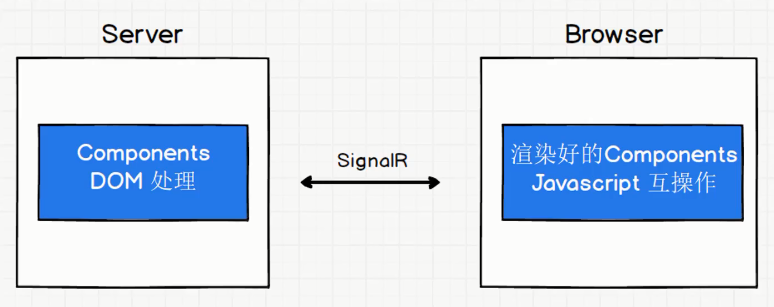
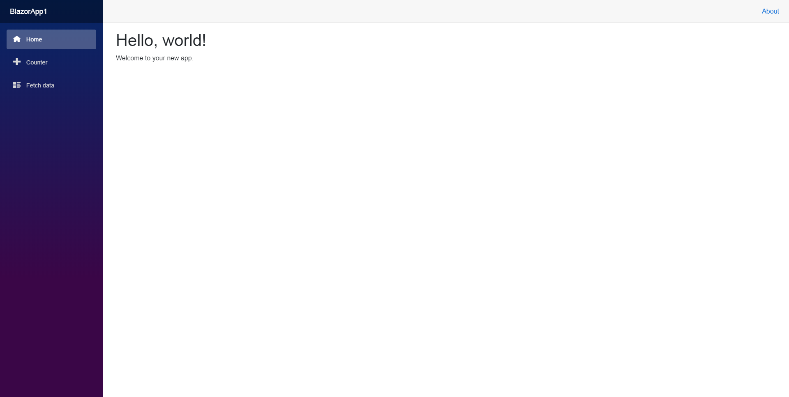
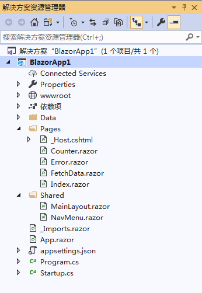
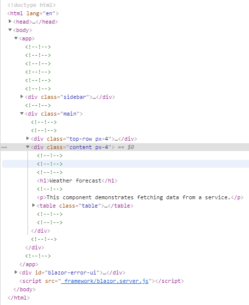
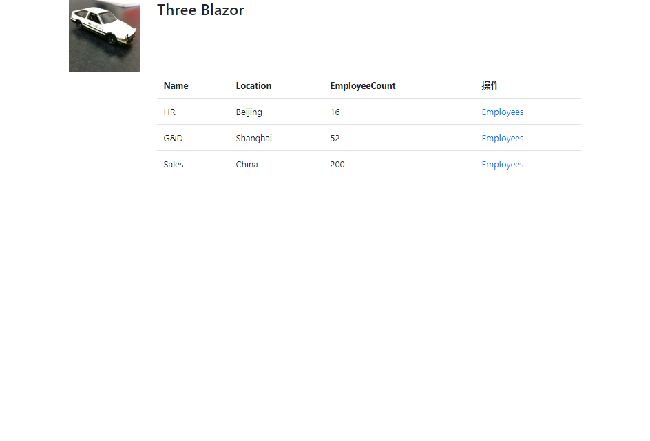

MVC与SPA的区别 MVC ：由Model、View、Controller组成。其中View是由Razor（C#） 写的，所以View 部分是在服务器端 进行渲染，然后再把渲染的结果发送给客户端浏览器。

SPA ：即Single Page Application ，和MVC对比，服务器端没有C#写的View ，而是将静态的Html、JavaScript、Css 发送给浏览器。然后浏览器端通过JavaScript和服务器端API进行互操作，如使用Ajax。（注意，图中静态文件不一定在服务器端中）

Blazor 传统的SPA只支持在客户端使用JavaScript 与服务器端进行互操作。而Blazor可以使用C# 写客户端的代码，并且可以在浏览器执行 ，与服务端进行互操作。Blazor基于WebAssembly ，所有有浏览器都支持WebAssembly。

Blazor基于Component 的编程模型，通常用于编写组件 。Blazor宿主模型 ：客户端 、服务器端 。
客户端宿主模型 在服务器端，使用C#编写的Components ，以DLL/Assembly 的形式发送给客户端浏览器 ，同时发送一个特制版本mono （该mono由WebAssembly语言 编写，浏览器可以理解这种语言）。然后mono把DLL/Assembly 里面的代码（包含Components）解析成WebAssembly，而浏览器则通过JavaScript进行互操作。

优点 ：
没有.NET服务器端依赖项。应用在下载到客户端之后完全正常运行。
完全利用客户端资源和功能。
工作从服务器卸载到客户端。
不需要ASP.NET Core web服务器来托管应用程序。无服务器部署方案可能。
缺点 ：
应用程序限制为浏览器的功能。
需要支持的客户端硬件和软件（例如，WebAssembly支持）。
下载文件较大，应用需要较长时间才能加载。
.NET运行时和工具支持不太成熟。例如.NET Standard支持和调试中存在限制。
服务器端宿主模型 使用C#在服务器端编写Components，并且在服务器端进行渲染 ，转化成Html、Css、JavaScript，然后通过SignalR 发送到浏览器端。而浏览器端的一些事件，UI更新以及互操作，都是通过SignalR 发送到服务器端 进行处理的。

优点 ：
下载大小明显小于客户端应用，且应用加载速度更快。
应用充分利用服务器功能，包括使用任何与.NET Core兼容的Api。
可以使用.NET工具调试。
支持瘦客户端。即适用于不支持WebAssembly的浏览器和资源限制的设备。
应用程序的.NET/C#代码库（包括应用程序的组件代码）不会提供给客户端。
缺点 ：
通常存在较高的延迟。因为每个用户交互都涉及网络跃点。
不支持脱机。如果客户端连接失败，应用将停止工作。
对于包含多个用户的应用来说，可伸缩性困难。服务器必须管理多个客户端连接并处理客户端状态。
需要ASP.NET Core服务器。不支持无服务器部署方案。
Blazor项目模板 创建Blazor服务器端模型
打开VS2019，创建Blazor应用 项目，选择Blazor Server应用 。
直接运行项目。

项目的目录结构。

Startup类 Startup.cs类的ConfigureServices方法 相关说明。
public void ConfigureServices (IServiceCollection services ) services.AddRazorPages(); services.AddServerSideBlazor(); services.AddSingleton<WeatherForecastService>(); }
Startup.cs类的Configure方法 中。
app.UseEndpoints(endpoints => { endpoints.MapBlazorHub(); endpoints.MapFallbackToPage("/_Host" ); });
页面和路由 _Host.cshtml 页面，拥有整个外层的html元素 。body中引入了JS文件blazor.server.js ，该文件包含了SignalR的功能，可通过其中的方法建立SignalR连接 。app元素 是整个web应用的根元素 ，对应App.razor文件 。
@page "/" @namespace BlazorApp1.Pages @addTagHelper *, Microsoft.AspNetCore.Mvc.TagHelpers @{ Layout = null; } <!DOCTYPE html> <html lang ="en" > <head > <meta charset ="utf-8" /> <meta name ="viewport" content ="width=device-width, initial-scale=1.0" /> <title > BlazorApp1</title > <base href ="~/" /> <link rel ="stylesheet" href ="css/bootstrap/bootstrap.min.css" /> <link href ="css/site.css" rel ="stylesheet" /> </head > <body > <app > <component type ="typeof(App)" render-mode ="ServerPrerendered" /> </app > <div id ="blazor-error-ui" > <environment include ="Staging,Production" > An error has occurred. This application may no longer respond until reloaded. </environment > <environment include ="Development" > An unhandled exception has occurred. See browser dev tools for details. </environment > <a href ="" class ="reload" > Reload</a > <a class ="dismiss" > 🗙</a > </div > <script src ="_framework/blazor.server.js" > </script > </body > </html >
App.razor文件中，定义了路由 ，通过Router 查找对应的页面。
<Router AppAssembly ="@typeof(Program).Assembly" > <Found Context ="routeData" > <RouteView RouteData ="@routeData" DefaultLayout ="@typeof(MainLayout)" /> </Found > <NotFound > <LayoutView Layout ="@typeof(MainLayout)" > <p > Sorry, there's nothing at this address.</p > </LayoutView > </NotFound > </Router >
路由工作方式：首先找到_Host.cshtml初始页面 （外层页面），然后内层页面（App元素内）默认找到“/”路由 ，注意每个页面的@page 参数对应该页面的路由 。如Index.razor页面。
@page "/" <h1 > Hello, world!</h1 > Welcome to your new app.
再次运行项目，通过Chrome控制台可以看出：当切换菜单栏 的时候，地址 发生变化，页面发生局部变化 ，但是没有出现新的请求。因为这是通过SignalR 与后台交换数据的。

后台代码 打开Counter.razor 文件，其中@code中的内容 可以写C#代码（与Razor Page 中的@function 功能类似）。onclick方法 和字段引用 之前要加上@ 。
该页面的功能是：每点击一次按钮，对Current count进行自增。
@page "/counter" <h1>Counter</h1> <p>Current count: @currentCount</p> <button class ="btn btn-primary" @onclick="IncrementCount" >Click me</button> @code { private int currentCount = 0 ; private void IncrementCount ( { currentCount++; } }
打开FetchData.razor 文件。C#代码中，OnInitializedAsync方法 在页面第一次被初始化 时执行。可以通过重写OnInitializedAsync方法 ，实现一些自定义的逻辑。
@code { private WeatherForecast[] forecasts; protected override async Task OnInitializedAsync ( { forecasts = await ForecastService.GetForecastAsync(DateTime.Now); } }
Error.razor 页面是一些静态文字，当生产环境发生错误时展示。该配置在Startup类中的Configure方法 。
if (env.IsDevelopment()){ app.UseDeveloperExceptionPage(); } else { app.UseExceptionHandler("/Error" ); app.UseHsts(); }
_Import.razor ，把所有页面需要引用的库 ，放在该页面。
@using System.Net.Http @using Microsoft.AspNetCore.Authorization @using Microsoft.AspNetCore.Components.Authorization @using Microsoft.AspNetCore.Components.Forms @using Microsoft.AspNetCore.Components.Routing @using Microsoft.AspNetCore.Components.Web @using Microsoft.JSInterop @using BlazorApp1 @using BlazorApp1.Shared
Blazor项目实例 创建项目 打开VS 2019，创建新项目ASP.NET Core Web应用程序 ，项目名称为ThreeBlazor ，选择Empty 模板。
把Three项目 中的Models 和Services 文件夹复制到本项目根目录下，并修改文件的命名空间 为ThreeBlazor 。
Startup类 中，在ConfigureServices 添加相关的Blazor服务 以及依赖注入 。在Configure 添加静态文件 中间件并配置BlazorHub 。
public class Startup { public void ConfigureServices (IServiceCollection services ) { services.AddRazorPages(); services.AddServerSideBlazor(); services.AddSingleton<IClock, UtcClock>(); services.AddSingleton<IDepartmentService, DepartmentService>(); services.AddSingleton<IEmployeeService, EmployeeService>(); } public void Configure (IApplicationBuilder app, IWebHostEnvironment env ) { if (env.IsDevelopment()) { app.UseDeveloperExceptionPage(); } app.UseStaticFiles(); app.UseRouting(); app.UseEndpoints(endpoints => { endpoints.MapBlazorHub(); endpoints.MapFallbackToPage("/_Host" ); }); } }
新建wwwroot文件夹 。把Three 项目中wwwroot内的css 和images 文件夹复制到本项目wwwroot文件夹下。
添加初始页_Host 项目右键，新建Pages文件夹 。在Pages文件夹中添加新建项Razor 视图 ，命名为_Host.cshtml 。
@page "/" @namespace ThreeBlazor.Pages @addTagHelper "*, Microsoft.AspNetCore.Mvc.TagHelpers" <!DOCTYPE html> <html lang ="en" > <head > <meta charset ="utf-8" /> <meta name ="viewport" content ="width=device-width, initial-scale=1.0" /> <title > Three Blazor</title > <base href ="~/" /> <link href ="~/css/bootstrap.css" rel ="stylesheet" /> <link href ="~/css/site.css" rel ="stylesheet" /> </head > <body > <app > @(await Html.RenderComponentAsync<App > (RenderMode.ServerPrerendered)) </app > <script src ="_framework/blazor.server.js" > </script > </body > </html >
项目右键，添加新建项Razor 组件 ，命名为App.razor 。
<Router AppAssembly ="@typeof(Program).Assembly" > <Found Context ="routeData" > <RouteView RouteData ="@routeData" DefaultLayout ="@typeof(MainLayout)" /> </Found > <NotFound > <LayoutView Layout ="@typeof(MainLayout)" > <p > Sorry, there's nothing at this address.</p > </LayoutView > </NotFound > </Router >
项目右键，添加_Import.razor文件 。作用是为项目引入相关的库。
@using System.Net.Http @using Microsoft.AspNetCore.Components.Forms @using Microsoft.AspNetCore.Components.Routing @using Microsoft.AspNetCore.Components.Web @using Microsoft.JSInterop @using ThreeBlazor.Models @using ThreeBlazor.Services @using ThreeBlazor.Shared
添加母页面MainLayout 项目右键，添加Shared文件夹 。在Shared文件夹中添加MainLayout.razor 。注意，.razor文件 会被编译为一个类，而MainLayout.razor继承于Microsoft.AspNetCore.Components.LayoutComponentBase 。
@inherits Microsoft.AspNetCore.Components.LayoutComponentBase <div class ="container" > <div class ="row" > <div class ="col-2" > <img asp-append-version ="true" alt ="ae86" src ="images/ae86.jpg" style ="max-width:100%;" /> </div > <div class ="col-10" > <span class ="h3" > Three Blazor</span > </div > </div > <div class ="row" > <div class ="col-12" > @Body </div > </div > </div >
部门页面 Index部门页面 在Pages文件夹下添加Index.razor 。
@page "/" @inject IDepartmentService departmentService @if (departments == null) { <p > <em > 加载中</em > </p > } else { <div class ="row" > <div class ="col-md-10 offset-md-2" > <table class ="table" > <tr > <th > Name</th > <th > Location</th > <th > EmployeeCount</th > <th > 操作</th > </tr > @foreach (var item in departments) { <DepartmentItem department ="@item" > </DepartmentItem > } </table > </div > </div > <div class ="row" > <div class ="col-md-4 offset-md-2" > <a href ="/add-department" > Add</a > </div > </div > } @code { IEnumerable<Department > departments; protected override async Task OnInitializedAsync() { departments = await departmentService.GetAll(); } }
DepartmentItem组件 项目右键，新建Components文件夹 ，在Components文件夹下新建DepartmentItem.razor 。
<tr> <td>@Department.Name</td> <td>@Department.Location</td> <td>@Department.EmployeeCount</td> <td> <a href="/employee/@Department.Id" >Employees</a> </td> </tr> @code { [Parameter ] public Department Department { get ; set ; } }
别忘了在_Import.razor文件 添加Components 的引用。
@using ThreeBlazor.Components
运行项目，页面已经有数据。

AddDepartment组件 在Pages文件夹下，添加AddDepartment.razor 。EditForm 为内置的Component，需要指定一个Model ，提交表单则执行自定义方法HandleValidSubmit 。InputText 和InputNumber 都是内置的Component，使用@bind-Value 进行双向绑定。另外，当提交完成后，需要使用NavigationManager 跳转到Index页面。
@page "/add-department" @inject IDepartmentService departmentService @inject NavigationManager navigationManager <EditForm Model ="@department" OnValidSubmit ="@HandleValidSubmit" > <DataAnnotationsValidator /> <ValidationSummary /> <div class ="row form-group" > <div class ="col-md-2 offset-md-2" > <label for ="name" > Name</label > </div > <div class ="col-md-2" > <InputText id ="name" class ="form-control" @bind-Value ="department.Name" /> </div > </div > <div class ="row form-group" > <div class ="col-md-2 offset-md-2" > <label for ="location" > Location</label > </div > <div class ="col-md-2" > <InputText id ="location" class ="form-control" @bind-Value ="department.Location" /> </div > </div > <div class ="row form-group" > <div class ="col-md-2 offset-md-2" > <label for ="employeeCount" > Employee Count</label > </div > <div class ="col-md-2" > <InputNumber id ="employeeCount" class ="form-control" @bind-Value ="department.EmployeeCount" /> </div > </div > <div class ="row" > <div class ="col-md-2 offset-md-2" > <button type ="submit" class ="btn btn-primary" > 提交</button > </div > </div > </EditForm > @code { private Department department = new Department(); private async Task HandleValidSubmit() { await departmentService.Add(department); navigationManager.NavigateTo("/"); } }
员工页面 Employee页面 在Pages文件夹下，添加Employee.razor 。
@page "/employee/{DepartmentId}" @inherits EmployeeViewModel @if (Employees == null) { <p > <em > 加载中...</em > </p > } else { <div class ="row" > <div class ="col-md-10 offset-md-2" > <table class ="table" > <thead > <tr > <th > First Name</th > <th > Last Name</th > <th > Gender</th > <th > Is Fired</th > <th > 操作</th > </tr > </thead > <tbody > @foreach (var employee in Employees) { <EmployeeItem employee ="@employee" > </EmployeeItem > } </tbody > </table > </div > </div > <div class ="row" > <div class ="col-md-4 offset-md-2" > <a href ="/add-employee/@DepartmentId" > </a > </div > </div > }
EmployeeViewModel类 由于Employee.razor中的C#代码可能会较多，因此把C#代码分离出来到别的文件中。
在Pages文件夹下，添加EmployeeViewModel.cs 。该类继承于ComponentBase 。
using Microsoft.AspNetCore.Components;using System.Collections.Generic;using System.Threading.Tasks;using ThreeBlazor.Services;namespace ThreeBlazor.Pages { public class EmployeeViewModel : ComponentBase { [Parameter ] public string DepartmentId { get ; set ; } public IEnumerable<ThreeBlazor.Models.Employee> Employees; [Inject ] protected IEmployeeService EmployeeService { get ; set ; } protected override async Task OnInitializedAsync ( { Employees = await EmployeeService.GetByDepartmentId(int .Parse(DepartmentId)); } } }
EmployeeItem组件 和DepartmentItem组件一样。在Components文件夹 下，添加EmployeeItem.razor 。
@inject IEmployeeService employeeService <tr > <td > @Employee.FirstName</td > <td > @Employee.LastName</td > <td > @Employee.Gender</td > <td > @(Employee.Fired ? "是" : "")</td > <td > @if (!Employee.Fired) { <a href ="javascript:void(0)" @onclick ="HandleFire" > Fire </a > } </td > </tr > @code { [Parameter] public Employee Employee { get; set; } private async Task HandleFire() { await employeeService.Fire(Employee.Id); } }
AddEmployee组件 在Pages文件夹下，添加AddEmployee.razor 。代码内容与AddDepartment.razor 类似。
@page "/add-employee/{DepartmentId}" @inject IEmployeeService employeeService @inject NavigationManager navigationManager <EditForm Model ="@employee" OnValidSubmit ="@HandleValidSubmit" > <DataAnnotationsValidator /> <ValidationSummary /> <div class ="row form-group" > <div class ="col-md-2 offset-md-2" > <label for ="firstName" > First Name</label > </div > <div class ="col-md-2" > <InputText id ="firstName" class ="form-control" @bind-Value ="employee.FirstName" /> </div > </div > <div class ="row form-group" > <div class ="col-md-2 offset-md-2" > <label for ="lastName" > Last Name</label > </div > <div class ="col-md-2" > <InputText id ="lastName" class ="form-control" @bind-Value ="employee.LastName" /> </div > </div > <div class ="row form-group" > <div class ="col-md-2 offset-md-2" > <label for ="gender" > Gender</label > </div > <div class ="col-md-2" > <select id ="gender" class ="form-control" @onchange ="OnGenderSelected" > <option selected hidden disabled > --- 请选择性别 --- </option > @foreach (var item in Enum.GetValues(typeof(Gender)).Cast<Gender > ()) { <option value ="@item" > @item.ToString()</option > } </select > </div > </div > <div class ="row" > <div class ="col-md-2 offset-md-2" > <button type ="submit" class ="btn btn-primary" > 提交</button > </div > </div > </EditForm > @code { [Parameter] public string DepartmentId { get; set; } private Models.Employee employee = new Models.Employee(); private void OnGenderSelected(ChangeEventArgs e) { var gender = Enum.Parse(typeof(Gender), (string)e.Value); employee.Gender = (Gender)gender; } private async Task HandleValidSubmit() { employee.DepartmentId = int.Parse(DepartmentId); await employeeService.Add(employee); navigationManager.NavigateTo($"/employee/{DepartmentId}"); } }
小需求 对部门页面 进行改造：如果部门人员大于50，则部门人数加粗显示。
修改DepartmentItem.razor 代码如下。
<tr > <td > @Department.Name</td > <td > @Department.Location</td > @if (Department.EmployeeCount > 50) { <td > <strong > @Department.EmployeeCount</strong > </td > } else { <td > @Department.EmployeeCount</td > } <td > <a href ="/employee/@Department.Id" > Employees</a > </td > </tr > @code { [Parameter] public Department Department { get; set; } }
注意 ：对于一些量比较大的代码，可以考虑使用一个新的Component 实现。